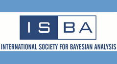
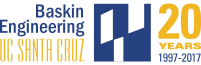

O'Bayes 2022
University of California Santa Cruz
September 7-10, 2022
O'Bayes 2022 is dedicated to facilitate the exchange of recent research developments in objective Bayes theory, methodology and applications, and related topics, to provide opportunities for new researchers, and to establish new collaborations and partnerships. The meeting is the biennial meeting of the Objective Bayes section of the International Society for Bayesian Analysis (ISBA). In this conference, we will be celebrating the 70th birthday of Luis Pericchi an extraordinary person who has been very influential in the successful development of OBayesian ideas.
This will be the 14th meeting of one of the longest running and preeminent meetings in Bayesian statistics, following earlier meetings held in West Lafayette, IN, USA, 1996; Valencia, Spain, 1998; Ixtapa, Mexico, 2000; Granada, Spain, 2002; Aussois, France, 2003; Branson, MO, USA, 2005; Roma, Italy, 2007; Philadelphia, PA, USA, 2009; Shanghai, China, 2011; Durham, NC, USA 2013; Valencia, Spain 2015; Austin, TX, USA, 2017, and Warwick, UK, 2019.
A safe ISBA meeting
Please note that attendees to this meeting are expected to share our commitment to safeISBA. Compliance with ASA’s Ethical Guidelines for Statistical Practice and ISBA Code of Conduct is required of and tacitely endorsed by all participants.Updates
Scientific committee
Local organizing committee
Acknowledgement: The conference is sponsored by the International Society for Bayesian Analysis (ISBA) and the Jack Baskin School of Engineering of the University of California Santa Cruz.
 